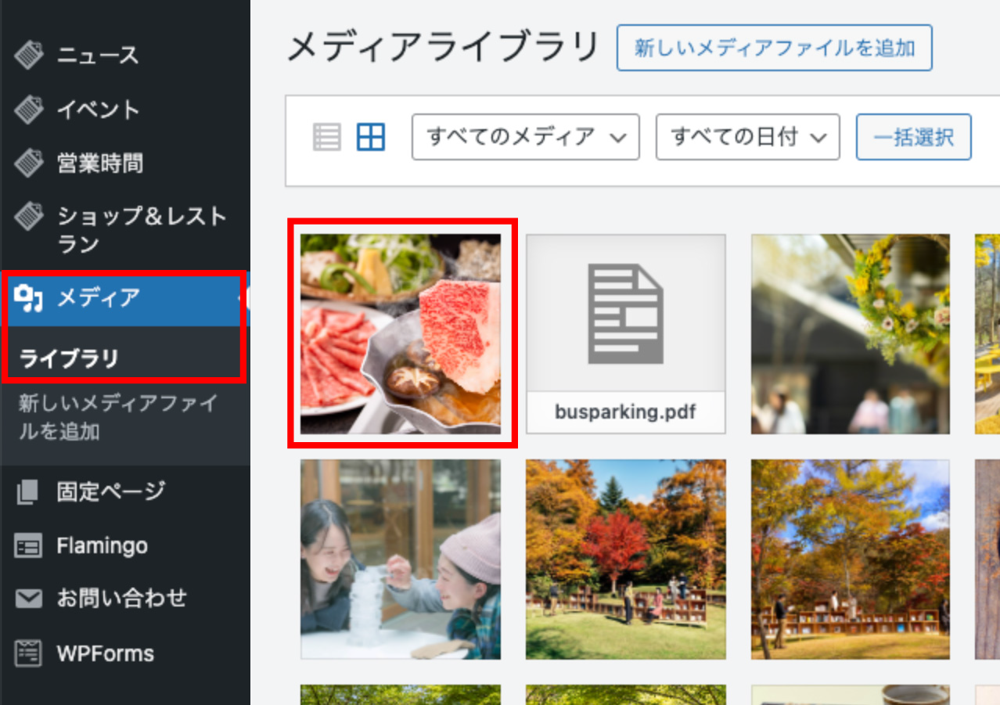

星野エリア
WordPress更新マニュアル【共通操作編】
2024.4.4 更新
メニュー
共通操作編
ログインする
- 管理画面にアクセス
https://admin.hoshino-area.jp/wp-login.php - IDとパスワードを入力しログインボタンをクリック

※パスワードは他人に知られないよう厳重に管理してください。
写真素材の作り方
- 使用する画像を用意し、適切なサイズに合わせます
※ブログ本文中の画像サイズは横1000px位を目安としてください。
※リサイズしないと、膨大なデータサイズのファイルをアップすることになってしまい、サーバを圧迫してしまいます。
- 解像度は72dpi、拡張子は「jpg」
- ファイル名の重複を避けるために「240301a.jpg」ように、日付を付与
※一日に複数枚の画像をアップするときは“a”の部分をアルファベット順に変えます。
※ファイル名に使える文字は「半角英数字」のみです。日本語や全角英数字は使わないでください。
リサイズの方法
- メディアライブラリを開き、データサイズが大きいままの画像を選択
 - 「画像を編集」をクリック
- 「画像縮尺の変更」で新規サイズの横幅に「1000px」と入力し、
「縮尺変更」をクリックすると、リサイズされます
写真をアップロードする
【アップロード時の写真のファイル名は必ず半角英数字にしてください】
- 画像ブロックで「アップロード」をクリック
【新しいファイルをアップロードしたい場合】
- ファイルを選択する画面が開きますので「ファイルをアップロード」を選択し、
「アップロードするファイルをドロップまたはファイルを選択」から、挿入するファイルをドロップもしくは選択してアップロード完了
【既にアップロードされているファイルを使用する場合】
- 「メディアライブラリ」を選択し、挿入するファイルを選んで「投稿に挿入」をクリックして完了
アップロードした画像が表示されない場合は、左上のプルダウンで「すべての日付」を選択してください。
記事を編集・削除する
- ダッシュボードから、編集・削除したい投稿の「修正・削除する」ボタンをクリックします。
【記事を編集したい場合】
- 記事のタイトル・もしくは編集をクリックし個別ページに移動し、内容を修正したら「更新」ボタンをクリック
【記事を削除したい場合】
- 一覧ページからタイトル左側のチェックボックスにチェック
- 一括操作から「ゴミ箱へ移動」を選択
- 「適用」ボタンをクリックで記事が削除されます